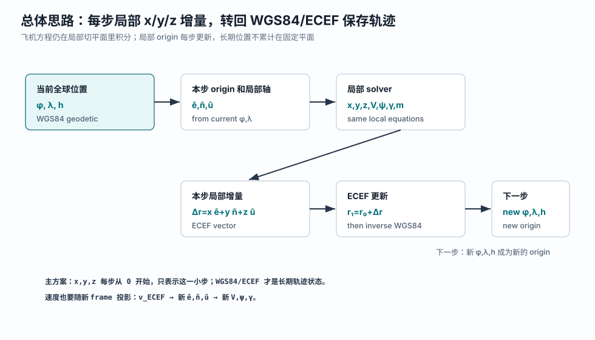
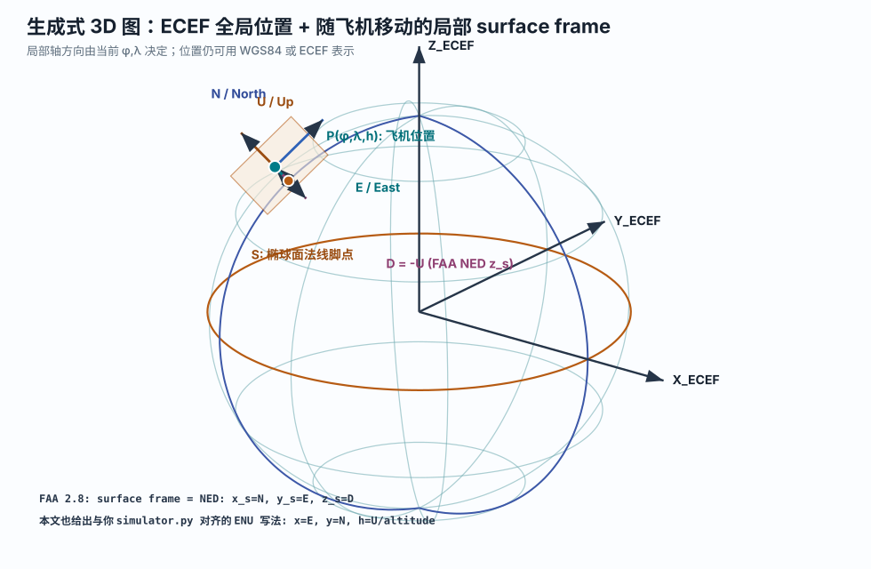
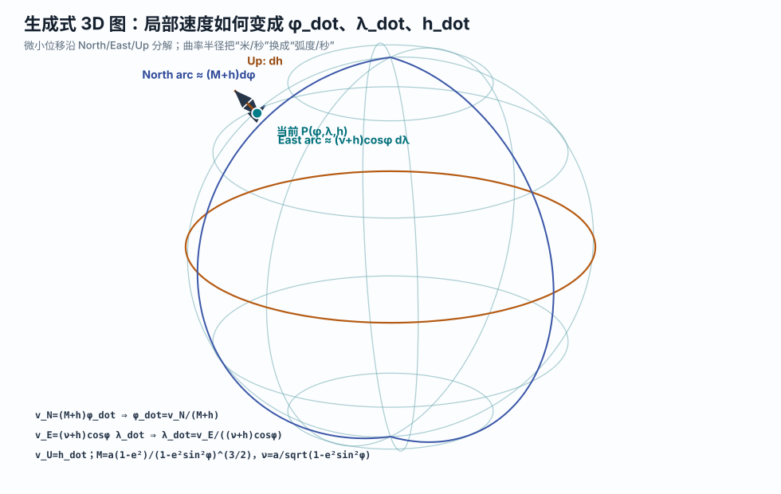
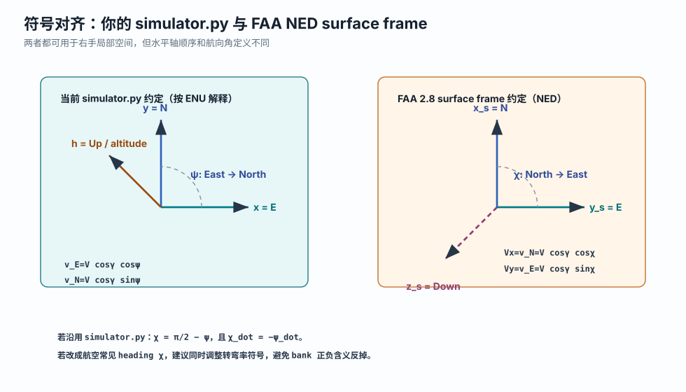

DIS / ECEF
PDF 中的 DIS 是 Distributed Interactive Simulation 标准里的地心地固直角坐标。它的几何含义与常见 ECEF 一致：原点在地心，Z 轴指向北极，X 轴穿过赤道和本初子午线，Y 轴在赤道面内构成右手系。
本文把 FAA Aircraft Dynamics Model 第 2.8 节的思路，翻译成适合当前
aerodynamic_model/simulator.py 的实现路径：飞机动力学仍在局部平直坐标里计算，轨迹位置用 WGS84 大地坐标和 ECEF 地心地固坐标传播。
固定 ENU 的优点是简单，但飞机离原点越远，切平面越不贴合 WGS84 椭球。完整 ECEF 向量动力学可以处理全球运动、地球自转和非惯性项，但会迫使你重写力、姿态和重力模型。
FAA ADM 第 2.8 节采用的是中间路线：飞机方程仍然在局部 surface frame 中解释，位置传播时再把局部速度换成纬度、经度和高度变化率。这样保留了点质量模型的直观性，也避免了固定局部平面飞远后的曲率误差。

PDF 中的 DIS 是 Distributed Interactive Simulation 标准里的地心地固直角坐标。它的几何含义与常见 ECEF 一致：原点在地心，Z 轴指向北极，X 轴穿过赤道和本初子午线，Y 轴在赤道面内构成右手系。
大地坐标使用 \(\phi,\lambda,h\)：\(\phi\) 是 geodetic latitude，即大地纬度；\(\lambda\) 是 longitude，即经度；\(h\) 是 ellipsoidal height，即相对 WGS84 参考椭球的椭球高。
PDF 用 NED：\(x_s\) 指北，\(y_s\) 指东，\(z_s\) 指下。它随飞机当前位置移动，局部水平面与 WGS84 椭球在当前点的切平面平行。

令 \(a\) 表示 WGS84 semi-major axis，即赤道半径；\(e^2\) 表示第一偏心率平方；\(\nu\) 表示 prime vertical radius of curvature，即卯酉圈曲率半径。对于当前飞机位置 \(P(\phi,\lambda,h)\)：
FAA PDF 中的 \(D_\mu\) 与这里的 \(\nu\) 是同一类量：它不是地心半径，而是从椭球几何推出来、用于东西向传播的曲率相关因子。
用 \(\phi,\lambda\) 可以直接得到三根单位向量。下面采用 ENU 排列，方便和当前 `simulator.py` 对齐：
FAA 的 NED 只是换一个排列和竖直方向：\(\hat{\mathbf x}_s=\hat{\mathbf n}\)，\(\hat{\mathbf y}_s=\hat{\mathbf e}\)，\(\hat{\mathbf z}_s=-\hat{\mathbf u}\)。
在当前位置附近，沿 North 走一小段，对应大地纬度变化；沿 East 走一小段，对应经度变化；沿 Up 走一小段，对应高度变化。曲率半径决定“多少米对应多少弧度”。

把小位移除以时间，就得到速度关系：
比较三根正交轴上的系数，得到最重要的传播公式：
这就是 FAA 2.8 节公式 (2.114) 的 ENU 版本。PDF 中写成 NED 形式时，\(V_x\) 是 North 速度，\(V_y\) 是 East 速度，因此 \(\dot\mu=V_x/(R_\mu+h)\)，\(\dot\lambda=V_y/((D_\mu+h)\cos\mu)\)。对应到本文：\(\mu\to\phi\)，\(R_\mu\to M\)，\(D_\mu\to\nu\)。
现在的 `simulator.py` 状态是：
其中位置导数是：
保留速度、航向、爬升角、质量和控制输入，但把长期位置从 \(x,y\) 换成 \(\phi,\lambda\)：
这里 \(h\) 继续表示绝对椭球高或近似海拔高度，不能因为局部 frame 每步重建就清零；大气密度模型仍然需要这个高度。

如果不改 `psi` 的含义，直接把当前 \(x,y\) 解释成 ENU 中的 \(E,N\)，则局部速度分量为：
代入上一节传播公式：
速度大小和角度动力学可以先保留当前模型：
这里 \(T\) 是 thrust，即推力；\(D\) 是 drag，即阻力；\(n\) 是 load factor，即载荷因子；\(\mu_b\) 是 bank angle，即倾侧角。为了避免和 PDF 中 geodetic latitude \(\mu\) 混淆，本文用 \(\mu_b\) 表示 bank angle。
下面不是直接改代码，只是把 `simulator.py` 的位置导数替换成 WGS84 propagation 的最小形态。角度都用弧度，长度都用米。
def radii_of_curvature(phi):
s = math.sin(phi)
denom = 1.0 - WGS84_E2 * s * s
nu = WGS84_A / math.sqrt(denom)
M = WGS84_A * (1.0 - WGS84_E2) / (denom ** 1.5)
return M, nu
def dynamics_geodetic(t, state_vec, control, atmosphere):
phi, lam, h, V, psi, gamma, m = state_vec
rho = atmosphere.get_ISA_density(h)
Cl, Cd = get_aerodynamic_coefficients(h, V, m, control, atmosphere)
D = 0.5 * rho * V**2 * Cd * S
M, nu = radii_of_curvature(phi)
v_E = V * math.cos(gamma) * math.cos(psi)
v_N = V * math.cos(gamma) * math.sin(psi)
v_U = V * math.sin(gamma)
dphidt = v_N / (M + h)
dlamdt = v_E / ((nu + h) * math.cos(phi))
dhdt = v_U
dVdt = (control.thrust - D) / m - g * math.sin(gamma)
dpsidt = g / (V * math.cos(gamma)) * math.sin(control.bank_rad) * control.load_factor
dgamadt = g / V * (control.load_factor * math.cos(control.bank_rad) - math.cos(gamma))
dmdt = 0.0
return [dphidt, dlamdt, dhdt, dVdt, dpsidt, dgamadt, dmdt]每个积分采样点都可以用正算公式得到 ECEF：
这样轨迹文件可以同时保存 WGS84 经纬高和 ECEF 米制直角坐标。
若外部数据给的是航空 heading \(\chi\)，即 \(0^\circ\) North、\(90^\circ\) East，则当前 \(\psi\) 约定下：
反过来输出 heading 时，\(\chi=\pi/2-\psi\)，然后归一化到 \([0,2\pi)\)。
终端区、进近、离场、区域航迹生成，以及类似 FAA TGF 的目标生成。PDF 也明确指出，这类模型忽略地球自转和重力方向随位置变化，适合飞机，不适合弹道飞行器或航天器。
靠近两极时 \(\cos\phi\) 很小，\(\dot\lambda\) 会变得数值敏感。长航程、高超声速或需要惯性导航级别精度时，应考虑 ECEF/ECI 向量动力学和地球自转项。
| 来源 | 本文采用的内容 |
|---|---|
| AircraftDynamicsModel.pdf §2.8 | DIS/ECEF、Geodetic、Surface/NED 三框架；surface frame 随飞机移动；由局部速度推导纬度率和经度率。 |
aerodynamic_model/simulator.py |
保留 \(V,\psi,\gamma,m\) 和 thrust/bank/load factor 控制输入；替换 \(x,y\) 平面位置传播方式。 |
| WGS84 椭球公式 | 使用 \(M\)、\(\nu\)、ECEF 正算和局部 ENU/NED 基底，确保地球曲率进入位置传播。 |
图由 generate_surface_frame_propagation_diagrams.py 生成，SVG 资源位于 assets/surface_frame_propagation/。